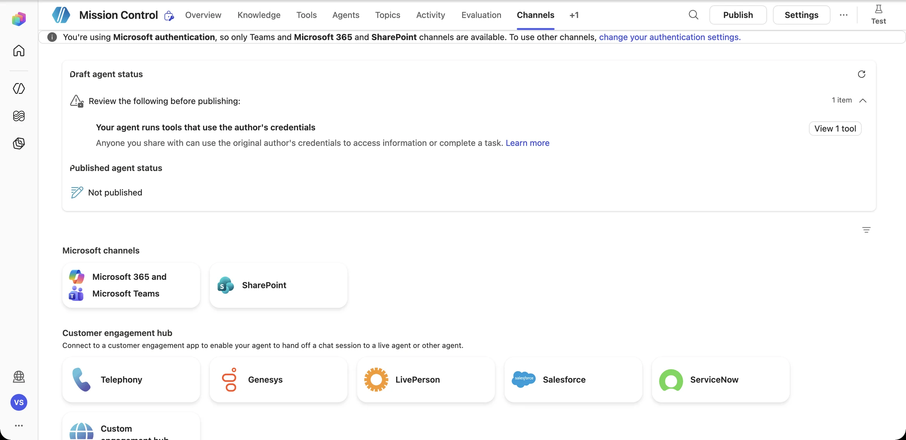

Briefing Improve
Final mission. You started with an assistant that could only talk. Now show the room an agent that investigates, decides, acts, protects, and proves, and explain why it matters to Contoso Digital.
Showcase format
The problem
Who hurts today, and how much?
The wow demo
A live request becomes a verifiable result
The safeguards
The gate, least privilege, and the injection defense
The proof
Scenario pass rate, plus the 403 you fixed
Next steps
What it would take to pilot
Pitch builder Interactive
Fill in the fields and your three-minute outline assembles itself. It's saved on this device.
Your team
Prepare and deliver the showcase
What you'll deliver
- A three-minute live demo, or a solution-design walkthrough
- Your safeguards, explained in plain business language
- Evidence: test results and one failure you fixed
- A credible next step
Pre-flight
- Open a fresh test conversation
- Keep the register list open in a second tab
- Pitch outline copied from the builder above
-
Run the pre-flight review
Select Publish. Before anything goes live, Copilot Studio lists the items to review. Resolve each one, or explain it in your showcase, before you publish.

-
Choose where Mission Control lives
Open Channels. With Microsoft (Entra ID) authentication, you can publish to Microsoft 365 and Teams and SharePoint, which is where Contoso Digital employees already work. Customer-engagement hubs (Genesys, Salesforce, ServiceNow…) are for handing off to a live agent.

-
Rehearse the three-minute demo
- 0:00 · The problem. “Triaging a member-facing incident takes a Digital employee 20+ minutes across three tools.”
- 0:30 · Known issue. The QuickPay pending prompt. The agent answers with DSI-1042 and creates no record.
- 1:15 · The wow moment. The OLB-500 prompt. Show the workflow run and the new SharePoint row with its real ID.
- 2:00 · The safeguard. The duplicate-debit prompt. The agent stops, and the approval request appears.
- 2:40 · Proof and next step. Baseline vs. re-run evaluation score, one failure you fixed, and a pilot proposal.
Demo insurance Live demos fail. Record a backup run of each prompt (screen recording or screenshots) before your slot, and keep the activity map open so you can show the why, not just the answer.
Peer scorecard
| Criterion | What great looks like | Score (0–4) |
|---|---|---|
| Business value | A clear problem, a clear user, measurable time saved or risk reduced | |
| Wow moment | The agent acted, and the result was verifiable | |
| Decision logic | Handles known, unknown, incomplete, and sensitive cases | |
| Safeguards | Approval gate, least privilege, injection defense | |
| Proof | Tested failure paths, honest errors | |
| Next steps | A realistic pilot plan with owners |
TOTAL · 0 / 24
Mission evaluator
- Score every team with the scorecard. Note one thing to steal and one question to ask.
- Ask each team: “What would have to be true for this to go into production?”
- Submit your own candidate automation use case from Mission 01's backlog exercise.
Post-flight: keep the momentum Next
Pick one use case
Take your highest-signal backlog item and write a one-page design: trigger, knowledge, tools, gates, and tests.
Talk to your platform team
Ask about environments, data policies, and the path from sandbox to a governed pilot.
Go deeper
Browse the resources for Microsoft Learn paths on agent flows, connectors, security, and evaluation.
Mission accomplished Splashdown
An AI assistant can answer questions. A well-designed Copilot Studio solution helps get business work done: safely, intelligently, and at scale. You just built one.
You took one agent through all six stages of the upgrade.
403, Duplicate, Rogue Document, Approval Gate: all diagnosed and defended.
A connected, tested prototype, or a validated solution design.